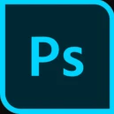
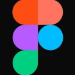
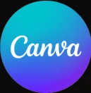
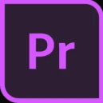
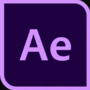
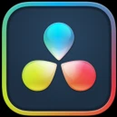
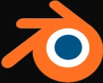

Graphic design · Motion · Brand
Adarsh Mukherjee.
I design brand identity, packaging, print and video for brands that want to look as good as their product.
Co-founder of Nauryx, a digital marketing and brand building firm in Bengaluru, working across pharma, beverage, automotive and hospitality.
Design started
with art.
I began as a character designer in 2019 and moved into graphic design three years ago. I started freelancing early on for musicians, YouTubers and independent creatives. That instinct for character is why my work carries a hand, not a template.
Capabilities
- 01
Brand identity
Logos, systems and the rules that keep them intact across every surface.
- 02
Graphic design
Print and digital work built on a grid, not on a template.
- 03
Video & production
Brand films, reels and cinematic edits, cut for attention.
- 04
Social media
Curated content that keeps one voice across every post.
- 05
Character & illustration
Illustrations that turn concepts into visual worlds.
- 06
Print production
Productions that turn design into something real.
Software
Design & layout
- Adobe Illustrator

Adobe Photoshop- Clip Studio Paint

Figma
Canva
Motion & edit

Adobe Premiere Pro
Adobe After Effects
DaVinci Resolve
3D

Blender- Unreal Engine
TÔSH
Alive hydration
Packaging
Label system for the Kanji range. One structure, one type hierarchy, an illustrated ingredient mark that changes per flavour.
Reels
Four vertical reels, four different approaches: a talking-head brand story shot on location with kinetic captions and map graphics, real footage with a battery motion graphic that drains and recharges, an ingredient build that assembles the three flavours, and a short story that ends on a sip of home.
Brand brochure
Kinvit Food and Beverages brochure introducing TÔSH. Editorial serif against product photography, built to sit with retail buyers rather than consumers.
Brochure spreads
Interior pages. Product photography carries the argument; the type stays out of its way and does the retail detail.
Social
Lifestyle and launch posts: the drink in everyday moments, then the three flavours side by side.
House of Cakes
Every detail crafted with elegance
Logo system
A cupcake mark set in a scalloped seal, with the flowing upper form doubling as cake decoration. Concepts and approved variants.
Construction and limits
Clear space, proportion and the misuse rules. The unglamorous pages that decide whether an identity survives contact with other people.
Typography and colour
Darker Grotesque for the wordmark, a palette drawn from soft ivory, cocoa brown and strawberry blush.
HRV Pharma
Three letters, one standard
CPHI Milan announcement
A 42 second motion piece announcing HRV Global Life Sciences at CPHI Milan, 6 to 8 October 2026. Milan landmarks, kinetic type and the stand details, cut to one continuous rhythm.
Print and collateral
API product list covers for a virtual pharma company whose proposition is scale without factories.
Social
LinkedIn campaign work built for a professional feed. Observance days handled with restraint, since the audience is regulatory and clinical rather than consumer.
Pocket cards
Trade-show cards for the two sides of the business. HRV states the proposition, NH Global Pharma states the reach. One system, two voices.
ANGZ
Drive clean. Live premium.
Identity
A monogram built from an arrow and the letter ‘A’, signalling forward motion for an automotive care brand. Shown in its primary lockup and the blue colourway used across print.
Product brochures
Brochures for two imported ANGZ products: Jean Albert car fragrance and the Stop & Go rat repellent. Each gets its own palette within one layout system.
Retail standee and guide
A 3 x 6 ft retail standee and a step by step quick user guide for Stop & Go.
Process
- 01
Listen
Understand the brand, the audience and the constraint before opening a file.
- 02
Draw
Sketch and explore. Direction is decided on paper, not in revisions.
- 03
Build
Design, shoot and cut against a system so every asset stays coherent.
- 04
Ship
Production-ready, specified for press or platform, with room to scale.
Let's create something that the world loves.
- Phone+91 74898 95064
- Emailadarshmukherjeeworks@gmail.com
- LinkedIn/in/adarshmukherjeedesign